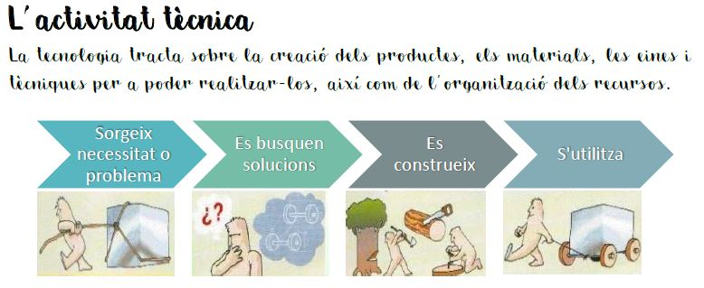
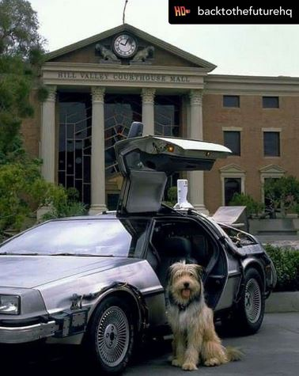

L'Einstein ens guia! 🦮

Hola sóc l'Einstein!
Imagino que ja em coneixeu, sóc el company de viatge del 'Doc' i també sóc amic del Marty McFly i de la Jennifer Parker. Durant tot el temps que he estat convisquent amb el Doc he après moltes coses sobre ciència i tecnologia.
Jo seré el vostre guia i espero acompanyar-vos a vosaltres, també, durant aquest nou curs 2025-26.
A continuació, trobareu tota la informació que necessiteu en relació als passos a realitzar durant el el curs sobre el diari d'aula i el procés tecnològic i els manuals o memòries tècniques que haureu de fer per garantir uns resultats òptims i eficients!
Diari d'aula · Diari de tecnologia
Escriviu el contingut...
L'activitat tècnica
Llegeix el text i observa les imatges:

Memòria tècnica
La memòria tècnica és una espècie de manual d'instruccions. La diferència és que aquest document és més complet, on també es registra el procés de creació: idees inicials, esbossos, materials i eines utilitzades, passos del procés de construcció, comprovacions, explicar problemes que ens hem trobat i com s'han resolt, etc. del que volem que sigui el nostre producte final.
Per poder portar-la a terme, és molt necessari tenir en compte seguir els passos de l'apartat anterior "El procés tecnòlògic".
